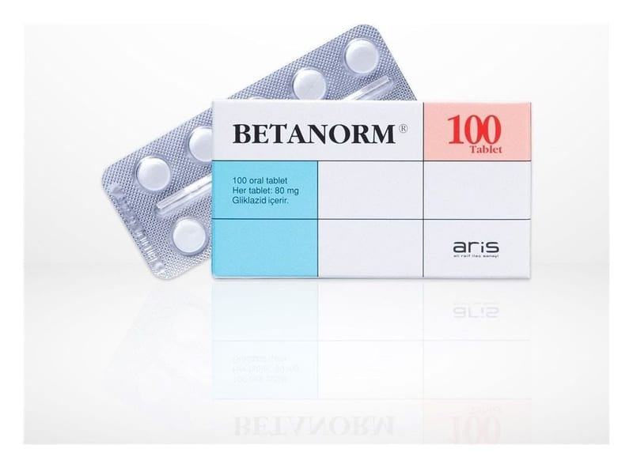

Betanorm 80 mg Tablet, 100 Adet

Ne için kullanılır
KT · Bölüm 1• BETANORM®, beyaz renkte, bir yüzü çapraz çentikli, diğer yüzü düz, yuvarlak tablet, 20, 60 ve 100 tabletten oluşan blister ambalajlarda bulunmaktadır. • BETANORM®, yetişkinlerde, diyet, fiziksel egzersiz ve kilo kaybının tek başına kan şekeri kontrolünü sağlamada yetersiz kaldığı durumlarda, insülinden bağımsız (Tip 2) diyabet tedavisinde kullanılmaktadır.
Bu ilaç inek sütü kaynaklı laktoz yardımcı maddesini içerir. Doktorunuza danışmadan ilacınızı kullanmayı bırakmayınız.
2.BETANORM®’u kullanmadan önce dikkat edilmesi gerekenler
BETANORM®’u aşağıdaki durumlarda KULLANMAYINIZ. Eğer;
• Etkin maddeye veya BETANORM®’un içerdiği yardımcı maddelerden birine (‘Yardımcı maddeler’ bölümünde listelenmiştir) veya aynı gruba ait benzer ilaçlara (örn: sülfonilüreler veya hipoglisemik sülfonamidler) aşırı duyarlıysanız (alerjik); • İnsüline bağımlı (Tip 1) diyabetiniz varsa; • İdrarda keton maddesi (protein) ve şeker varsa (diyabete bağlı olduğu anlamına gelebilir), şeker koması durumlarında, • Şiddetli böbrek veya karaciğer yetmezliğiniz varsa; • Mantar enfeksiyonu tedavisi için ilaç kullanıyorsanız (örn. mikonazol, bakınız ‘Diğer ilaçlar ile birlikte kullanım), • Emziriyorsanız ( bkz. Bölüm ‘Emzirme’).
BETANORM ®’ u aşağıdaki durumlarda DİKKATLİ KULLANINIZ
BETANORM®kullanmadan önce doktorunuza söyleyiniz.
Normal kan şeker düzeyine ulaşmak için doktorunuz tarafından reçete edilen tedaviyi takip etmeniz gerekmektedir. İlacı düzenli kullanmakla birlikte doktorunuzun önerdiği perhize/diyete uymalı, düzenli egzersiz yapmalı ve gerekiyorsa kilo vermelisiniz.
BETANORM®ile tedavi görürken kan şekeri (idrar da olabilir) ve aynı zamanda glikolizillenmiş hemoglobin (HbA 1c ) değerleriniz düzenli olarak kontrol edilmelidir.
Tedavinin ilk haftalarında kan şeker düzeyinde azalma (hipoglisemi) riski artabilir. Bu durumda sıkı tıbbi takip gerekmektedir.
Kan şeker düzeyinde azalma (hipoglisemi) aşağıdaki durumlarda meydana gelebilir: • Düzensiz öğün vakitleri, atlanan öğünler, • Oruç, • Yetersiz beslenme, • Perhiz/diyette değişiklik, özellikle öğün atlanması durumunda, • Eğer alınan/tüketilen karbonhidrat miktarı fiziksel aktivitedeki artışı karşılamıyorsa, • Alkol kullanımı, özellikle öğün atlanması durumunda, • Birlikte farklı ilaçlar veya doğal ilaçların kullanılması, • Aşırı miktarlarda BETANORM®kullanımı, • Hormonal hastalıkların varlığı (tiroid, hipofiz veya böbreküstü bezi bozuklukları), • Karaciğer veya böbrek fonksiyonlarında ciddi azalma varsa.
Kan şeker düzeyinde azalma varsa aşağıdaki belirtiler oluşabilir (bkz. Bölüm ‘Olası yan etkiler nelerdir’):
Baş ağrısı, yoğun açlık, bulantı, kusma, halsizlik, uyku bozuklukları, ajitasyon (aşırı huzursuzluk hali), agresyon (kişinin diğer kişilere karşı söz ve davranışlarıyla saldırgan bir durum alması), konsantrasyon bozukluğu, bilinç bulanıklığı ve reflekslerde bozukluk, depresyon, konfüzyon (kafa karışıklığı, zihin bulanması), görme veya konuşma bozukluğu, titreme, duyu bozukluğu, vertigo (baş dönmesi) ve güçsüzlük hissi.
Aşa ğıdaki belirtiler de oluşabilir: terleme, ciltte nem, anksiyete (endişe, kaygı), hızlı veya düzensiz kalp atışı, kan basıncında yükselme, yakın bölgelere de dağılabilen ani ve güçlü göğüs ağrısı (angina pektoris).
Kan şekeri değerleri düşmeye devam ederse aşırı konfüzyon (zihin karışıklığı), kasılma nöbetleri (konvülsiyon), kontrol kaybı, yüzeysel solunum, kalp hızında yavaşlama ve baygınlık/bilinç kaybı oluşabilir.
Kan şeker düzeyinde azalma (hipoglisemi) belirtileri şeker yenilirse genellikle hızla ortadan kalkar, örneğin glukoz tabletler, küp şeker, meyve suyu veya şekerli çay.
Yanınızda her zaman şeker (örneğin glukoz tabletleri veya küp şeker) bulundurmalısınız. Yapay tatlandırıcılar bu durumda etkili değildir. Şeker alımına rağmen belirtiler devam ederse veya belirtiler tekrar ortaya çıkarsa doktorunuza veya size en yakın hastaneye başvurunuz.
Bazı durumlarda kan şeker düzeyinde azalma belirtileri gizli, daha az belirgin veya yavaş gelişe bileceğinden kan şekeri seviyenizin düştüğünü fark etmeyebilirsiniz. Bu durum özellikle diğer ilaçları kullanan yaşlı hastalarda oluşabilir (örneğin merkezi sinir sistemi üzerinde etki eden ilaçlar ve beta blokör adı verilen ilaçlar).
Stresli bir durumdaysanız (kaza, ameliyat, ateşlenme) doktorunuz geçici olarak insülin tedavisi uygulayabilir.
Tedavi doktorunuz tarafından reçete edildiği şekilde uygulanmadığında, St John’s Wort (Hypericum perforatum) (sarı kantaron – yara otu) ilaçlarını kullanıyorsanız (bakınız “Diğer ilaçlarla birlikte kullanım”), özel stres durumlarında veya BETANORM®tedavisinin kan şekeri düzeyini yeterince düşürmediği durumlarda kan şeker düzeyinde artış (hiperglisemi) oluşabilir. Şeker düzeyinde artışın (hiperglisemi) belirtileri susamak, sık idrara çıkma isteği, ağız kuruluğu, kaşıntı veya cilt kuruluğu, cilt enfeksiyonları, performans düşüklüğüdür.
Bu belirtiler devam ederse doktorunuzu veya eczacınızı bilgilendiriniz.
BETANORM, florokinolonlar olarak adlandırılan antibiyotik sınıfına ait ilaçlar ile birlikte reçete edildiğinde, özellikle yaşlı hastalarda kan şekerinde bozukluklar (düşük kan şekeri ve yüksek kan şekeri) meydana gelebilir. Bu durumda, doktorunuz size kan şekeri düzeyi takibinin önemini hatırlatacaktır.
Sizde veya ailenizde glukoz-6-fosfat-dehidrojenaz (G6PD) eksikliği varsa kırmızı kan hücresi anomalisi (bozukluğu), hemoglobin düzeyinde azalma veya kırmızı kan hücrelerinde yıkım oluşabilir (hemolitik anemi). Bu durumda, bu ilacı kullanmadan önce doktorunuza danışınız.
Klinik veri bulunmadığından çocuklarda BETANORM®kullanılması önerilmemektedir.
Bu uyarılar geçmişteki herhangi bir dönemde dahi olsa sizin için geçerliyse lütfen doktorunuza danışınız
BETANORM®’un yiyecek ve içecek ile kullanılması
BETA NORM®tableti yiyecek ve alkol içermeyen içecekler ile alınabilir. Alkol ve alkol içeren içecekler kullanılmamalıdır.
Hamilelik
İlacı kullanmadan önce doktorunuza veya eczacınıza danışınız. Hamilelikte BETANORM®kullanımı önerilmemektedir. Hamileyseniz veya hamile kalmayı planlıyorsanız bu ilacı kullanmadan önce tavsiyesi için doktorunuza danışınız.
Tedaviniz sırasında hamile olduğunuzu fark ederseniz ilacı al mayı durdurunuz ve hemen doktorunuza danışınız.
Emzirme
İlacı kullanmadan önce do ktorunuza veya eczacınıza danışınız. BETANORM®emzirirken kullanılmaz.
Araç ve makine kullanımı
Kan şekeriniz çok düşük veya çok yüksek (hiperglisemi) ise veya bu nedenlerden dolayı görme bozukluğunuz varsa konsantrasyon veya tepki verme yeteneğinizi azalabilir. Araç veya makine kullanırken kendinize veya başkalarına zarar verebilirsiniz.
BETANORM®kullanırken, özellikle tedavinin başlangıcında kan şeker düzeyinde azalma (hipoglisemi) riskinden dolayı araç ve/veya makina kullanımı sırasında dikkatli olunması gerekmektedir.
- Sık sık düşük kan şekeri nöbetleri geçiriyorsanız - Düşük kan şekeri olduğuna dair belirtileri az veya hiç yoksa araç kullanıp kullanamayacağınızı doktorunuza sorunuz.
BETANORM®’un içeriğinde bulunan bazı yardımcı maddeler hakkında önemli bilgiler
BETANORM®, 45 mg laktoz içermektedir. Eğer daha önceden doktorunuz tarafından bazı şekerlere karşı intoleransınız olduğu söylenmişse bu tıbbi ürünü almadan önce doktorunuzla temasa geçiniz.
Diğer ilaçlarla birlikte kullanımı Hali hazırda kullandığınız, yakın zamanda kullanmış olduğunuz veya kullanabileceğiniz diğer ilaçları doktorunuza veya eczacınıza söyleyiniz.
Diğer ilaçlar BETANORM®ile tedaviyi etkileyebilir.
Aşağıdaki ilaçlar ile birlikte kullanıldığında BETANORM®’un kan şekeri düşürücü (hipoglisemik) etkisi artabilir ve kan şeker düzeyinde azalma (hipoglisemi) belirtileri ortaya çıkabilir:
• Kan şeker düzeyinde artışı (hiperglisemi) tedavi eden diğer ilaçlar (oral antidiyabetik ajanlar, GLP-1 reseptör agonistleri veya insülin), • Antibiyotikler (örn. sülfonamidler, klaritromisin), • Hipertansiyon veya kalp yetmezliği tedavisinde kullanılan ilaçlar (beta blokörler ve kaptopril veya enalapril gibi anjiyotensin dönüştürücü enzim inhibitörleri),
• Mantar enfeksiyonu tedavisinde kullanılan ilaçlar (mikonazol, flukonazol), • Mide veya onikiparmak bağırsağı ülserlerinin tedavisinde kullanılan ilaçlar (H
reseptör antagonistleri), • Depresyon tedavisinde kullanılan ilaçlar (monoamin oksidaz inhibitörleri), • Ağrı kesici ve antiromatizmal ilaçlar (fenilbutazon, ibuprofen), • Alkol ihtiva eden ilaçlar.
Aşağıdaki ilaçlar ile birlikte kullanıldığında BETANORM®’un kan şekeri düşürücü (hipoglisemik) etkisi azalabilir ve kan şeker düzeyinde artış (hiperglisemi) belirtileri ortaya çıkabilir:
• Merkezi sinir sistemi bozukluklarının tedavisinde kullanılan ilaçlar (klorpromazin), • Enflamasyonu azaltan ilaçlar (kortikosteroidler), • Astım tedavisinde veya efor sırasında kullanılan ilaçlar (damardan salbutamol, ritodrin ve terbutalin kullanımı), • Meme hastalıkları, majör menstrüal kanama ve endometriyozis tedavisinde kullanılan ilaçlar (danazol). St John’s Wort (Hypericum perforatum) (sarı kantaron – yara otu) ilaçları
BETANORM®, florokinolonlar olarak adlandırılan antibiyotik sınıfına ait ilaçlar ile birlikte reçete edildiğinde, özellikle yaşlı hastal arda kan şekerinde bozukluklar (düşük kan şek eri ve yüksek kan şekeri) meydana gelebilir.
BETANORM pıhtılaşma önleyici (antikoagülan) ilaçların etkisini artırabilir (örn. varfarin).
Eğer reçeteli ya da reçetesiz herhangi bir ilacı şu anda kullanıyorsanız veya son zamanlarda kullandıysanız lütfen doktorunuza veya eczacınıza bunlar hakkında bilgi veriniz.